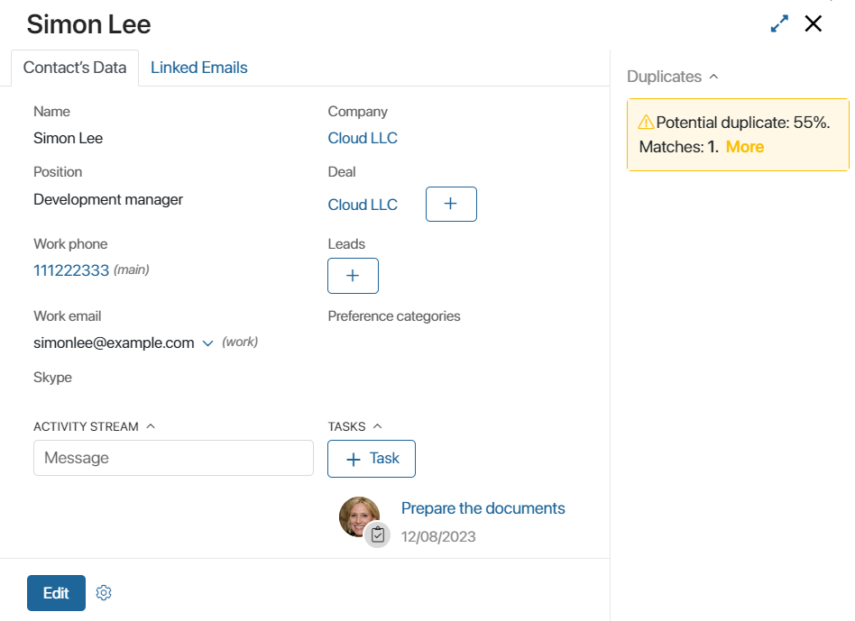
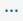
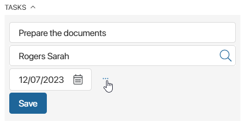
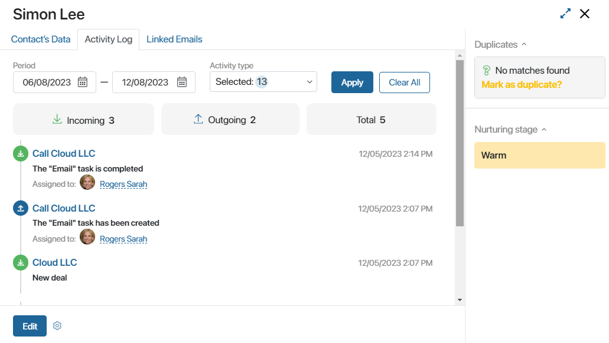
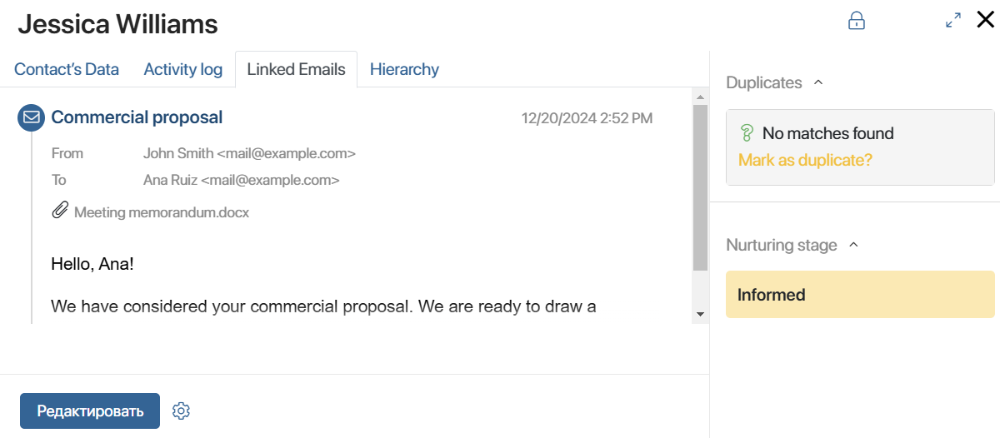

On the contact page, information about the representative of the client company is stored: their name, position, contact details, newsletter preference categories, associated tasks, etc.
Main information about the contact person is displayed on the Contact’s Data tab.
Additionally, the Activity Log and Linked Emails tabs are displayed on the contact page. The sidebar shows information about the contact’s duplicates and nurturing stage.
Users included in the Administrators group can customize the contact page. For example, if you have set up the Marketing workspace to send newsletters to your customers’ emails, you can create a separate tab with a list of newsletters sent to the contact.
Contact’s Data tab
The tab presents general information about the contact, as well as the activity stream and linked tasks.

The page stores the following data:
- The name and position of the contact person.
- Work phone, email, and Skype account.
- The company of the contact person, as well as linked deals and leads.
- Preference categories for mailing campaigns.
To change the contact data, click the Edit button.
At the bottom of the page, the Activity stream is displayed. Here, you can discuss issues with colleagues and view the history of interaction with the contact person.
To the right of the activity stream you can see current and completed tasks related to the contact. To create a task for the contact, click the + Task button, enter the title, assignee, and deadline.
If you need to specify additional participants, add a description, attach a file, etc., go to the advanced task settings. To do this, next to the Deadline field, click the  icon.

Activity Log tab
On this tab, actions aimed at communicating with the contact are displayed. Data is recorded if, while performing an action in the BRIX CRM solution, the user specifies a particular contact to communicate with.
Activities are divided into the following groups:
- Incoming. Actions performed by the client: opening a newsletter and clicking on an embedded link. Also included as incoming are actions by BRIX users, that is, adding leads or deals and completing CRM tasks.
- Outgoing. Actions in BRIX, such as creating a CRM task or sending an email from the built-in email client.

Records in the list can be sorted by period and type of activity. To do this, set values in the parameters and click Apply. To reset the search, click Clear All.
The number of actions performed with the contact is used to calculate the nurturing stage, that is, the client’s readiness to make a purchase.
Linked Emails tab
Emails received or sent using the Email workspace can be linked to contacts. Then you can see all correspondence:
- On the contact’s page.
- In the app items where the contact is specified. For example, in leads and deals where the field for adding contacts is configured by default.
To read the full email, click its text or title on the contact's page.

When you link an email to a contact, users who have permissions to view the item will see all correspondence with the customer.
You can link an email to a contact:
- Automatically. In this case, all correspondence will be displayed on the contact's page and app items in which this contact is specified. To enable such linking, contact the system administrator.
- Manually from the email page. With this method, you can determine which dialog with the client to add to the contact page and its related apps. For example, do not link emails when you need to limit access to correspondence about a confidential topic. To add Contacts to the list of available apps for email linking, contact your system administrator.
Note that if the Tabs and Linked emails widgets are not displayed on the contact's page, the system administrator needs to add them to the form manually. Learn more in the Form templates article.
Sidebar of the contact page
The sidebar displays the following information:
- Duplicates. The widget that allows you to find contacts with identical data, merge them, and continue working with only one item. It appears on the page if the system administrator has enabled duplicate search in the Contacts app.
- Nurturing stage. The client’s readiness to close the deal. Calculated based on the amount of interactions with the contact recorded in the system: calls made, webinars conducted, emails sent, etc. By default, contacts are assigned stages: New, Cold, Warm, and Hot. The system administrator can configure the nurturing stages: set names and conditions for their assignment.
Found a typo? Select it and press Ctrl+Enter to send us feedback